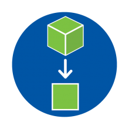

Abstraction is an essential part of computational thinking. Computational thinking is a problem-solving skill that develops an algorithm, or series of steps to perform a task or solve a problem. In computational thinking, decomposition and pattern recognition break down the complex, while abstraction figures out how to work with the different parts efficiently and accurately. This process occurs through filtering out irrelevant information and identifying what’s most important. It then connects each decomposed problem to establish a complete solution.
Abstraction in learning is the process of taking away or removing certain characteristics of a complex problem to reduce it to its most essential components. This helps to simplify or break down the problem to make it easier to resolve. Learning abstraction will make problems simpler to manage.
• Mathematics: Students conduct a survey of peers and analyze the data to note the key findings, create visualizations, present the findings.
• Science: Students develop laws and theorems by looking at similar formulas and equations.
• Social Studies: Students coalesce the most important details shared in articles about a specific current event and write a brief about the event.
Abstraction is useful in daily life being able to work on how to work with the different parts and efficiently and accurately.
While decomposition and pattern recognition break down the task, abstraction figures out how to work with the different parts efficiently and accurately. Which eventually leads to a complete solution that can be used to solve problems that incur in life by using all the 3 components of computational thinking.
On a last note, congragulations on making it this far for this is the final lesson taught for this website
good job on making it through and go do the last quiz. Till next time!